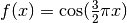
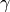

3.6. Validation curves: plotting scores to evaluate models¶
Every estimator has its advantages and drawbacks. Its generalization error can be decomposed in terms of bias, variance and noise. The bias of an estimator is its average error for different training sets. The variance of an estimator indicates how sensitive it is to varying training sets. Noise is a property of the data.
In the following plot, we see a function  and some noisy samples from that function. We use three different estimators to fit the function: linear regression with polynomial features of degree 1, 4 and 15. We see that the first estimator can at best provide only a poor fit to the samples and the true function because it is too simple (high bias), the second estimator approximates it almost perfectly and the last estimator approximates the training data perfectly but does not fit the true function very well, i.e. it is very sensitive to varying training data (high variance).

Bias and variance are inherent properties of estimators and we usually have to select learning algorithms and hyperparameters so that both bias and variance are as low as possible (see Bias-variance dilemma). Another way to reduce the variance of a model is to use more training data. However, you should only collect more training data if the true function is too complex to be approximated by an estimator with a lower variance.
In the simple one-dimensional problem that we have seen in the example it is easy to see whether the estimator suffers from bias or variance. However, in high-dimensional spaces, models can become very difficult to visualize. For this reason, it is often helpful to use the tools described below.
Examples:
- example_plot_polynomial_regression.py
- Plotting Validation Curves
- Plotting Learning Curves
3.6.1. Validation curve¶
To validate a model we need a scoring function (see Model evaluation: quantifying the quality of predictions), for example accuracy for classifiers. The proper way of choosing multiple hyperparameters of an estimator are of course grid search or similar methods (see Grid Search: Searching for estimator parameters) that select the hyperparameter with the maximum score on a validation set or multiple validation sets. Note that if we optimized the hyperparameters based on a validation score the validation score is biased and not a good estimate of the generalization any longer. To get a proper estimate of the generalization we have to compute the score on another test set.
However, it is sometimes helpful to plot the influence of a single hyperparameter on the training score and the validation score to find out whether the estimator is overfitting or underfitting for some hyperparameter values.
The function validation_curve can help in this case:
>>> import numpy as np
>>> from sklearn.learning_curve import validation_curve
>>> from sklearn.datasets import load_iris
>>> from sklearn.linear_model import Ridge
>>> np.random.seed(0)
>>> iris = load_iris()
>>> X, y = iris.data, iris.target
>>> indices = np.arange(y.shape[0])
>>> np.random.shuffle(indices)
>>> X, y = X[indices], y[indices]
>>> train_scores, valid_scores = validation_curve(Ridge(), X, y, "alpha",
... np.logspace(-7, 3, 3))
>>> train_scores
array([[ 0.94..., 0.92..., 0.92...],
[ 0.94..., 0.92..., 0.92...],
[ 0.47..., 0.45..., 0.42...]])
>>> valid_scores
array([[ 0.90..., 0.92..., 0.94...],
[ 0.90..., 0.92..., 0.94...],
[ 0.44..., 0.39..., 0.45...]])
If the training score and the validation score are both low, the estimator will be underfitting. If the training score is high and the validation score is low, the estimator is overfitting and otherwise it is working very well. A low training score and a high validation score is usually not possible. All three cases can be found in the plot below where we vary the parameter  of an SVM on the digits dataset.

3.6.2. Learning curve¶
A learning curve shows the validation and training score of an estimator for varying numbers of training samples. It is a tool to find out how much we benefit from adding more training data and whether the estimator suffers more from a variance error or a bias error. If both the validation score and the training score converge to a value that is too low with increasing size of the training set, we will not benefit much from more training data. In the following plot you can see an example: naive Bayes roughly converges to a low score.

We will probably have to use an estimator or a parametrization of the current estimator that can learn more complex concepts (i.e. has a lower bias). If the training score is much greater than the validation score for the maximum number of training samples, adding more training samples will most likely increase generalization. In the following plot you can see that the SVM could benefit from more training examples.

We can use the function learning_curve to generate the values that are required to plot such a learning curve (number of samples that have been used, the average scores on the training sets and the average scores on the validation sets):
>>> from sklearn.learning_curve import learning_curve
>>> from sklearn.svm import SVC
>>> train_sizes, train_scores, valid_scores = learning_curve(
... SVC(kernel='linear'), X, y, train_sizes=[50, 80, 110], cv=5)
>>> train_sizes
array([ 50, 80, 110])
>>> train_scores
array([[ 0.98..., 0.98 , 0.98..., 0.98..., 0.98...],
[ 0.98..., 1. , 0.98..., 0.98..., 0.98...],
[ 0.98..., 1. , 0.98..., 0.98..., 0.99...]])
>>> valid_scores
array([[ 1. , 0.93..., 1. , 1. , 0.96...],
[ 1. , 0.96..., 1. , 1. , 0.96...],
[ 1. , 0.96..., 1. , 1. , 0.96...]])